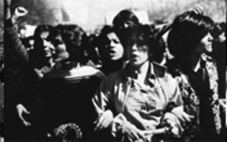

|
|

لایحه حمایت خانواده
جنبش زنان دربازی مار و پله
پروین اردلان
چهار شنبه22 آبان 1387
سه زن با دست های قلاب شده در کنار هم فریاد می کشند. آنها جزو زنانی هستند که در اولین زمستان سرد انقلاب 1357 روز جهانی زن را با فریادشان به روز اعتراض تبدیل کردند. بعدها دست های قلاب شده شان باز شد و فریادشان نیز در گلو خشکید اما تصویر شان ماندگار و ثبت شد و زیر آن این شعار نیر نقش بست: " ما انقلاب نکردیم تا به عقب برگردیم ". آنان به دو چیز معترض بودند یکی پوشش اجباری و دیگری لغو قانون حمایت خانواده. هم پوشش اجباری شد و هم قانون حمایت خانواده لغو شد و ما به عقب برگشتیم.

اکنون 30 سال از آن زمان می گذرد، 30 سال از روزی که در آستانه پیروزی انقلاب اسلامی ایران و همزمان با روزجهانی زن، نخستین شادی زنان ایرانی با نخستین اعتراض گسترده شان در آمیخت و تراژدی شکست را بر لبه پیروزی پدید آورد. لایحه حمایت خانواده لغو وفریادها هم خاموش شد.
لایحه حمایت خانواده در دهه 1340 توسط حقوق دانی به نام مهرانگیز منوچهریان که نخستین سناتور زن در مجلس ایران بود مطرح شد. او هم حقوق دان بود و مسلط به مسائل حقوقی؛ هم فمینست بود و آگاه و معترض به تبعیضات قانونی علیه زنان؛ هم درقدرت بود و قادر به طرح مسائل زنان در قدرت؛ هم موسس سازمانی غیردولتی بود به نام انجمن زنان حقوق دان و فعال اجتماعی؛ و هم به خاطر دریافت جایزه بین المللی حقوق بشر چهره ای جهانی داشت. علاوه بر این سال های فعالیت او زمانه ورود زنان به عرصه عمومی نیز بود، زمانی که زنان برای نخستین بار ورود به عرصه های سیاسی چون نمایندگی مجلس را نیز تجربه می کردند و به همین دلیل ورود به حوزه عمومی با کسب حقوق زنان ارتباطی تنگاتنگ داشت و سازمان ها و نشریات زنان نیز فعال بودند. اما، این همه کافی نبود، از یک سو شرع اجازه طرح لایحه پیشنهادی او را نداد و لایحه پیشنهادی اش به صحن علنی مجلس نرسید، از سوی دیگر دولت مدرن مذهبی که در تقابل با شرعیون نیز بود به تمام و کمال جرئت مخالفت با فقها را نداشت اما سر قدرت نمایی داشت. پس طرح منوچهریان کنار گذاشته شد و در نهایت، به همت دیگر زنان مدافع دولت قانون دیگری زیر عنوان حمایت خانواده به نام دولت وقت در مجلس طرح و با در نظر گرفتن نظرات فقهای دینی نوگرا درسال 1346 به تصویب رسید. به هرحال گامی به جلو برداشته شده بود اما گفتمان حقوقی زنان برای تبدیل شدن به گفتمانی عمومی در جامعه در آغاز راهی دراز بود.
جلو بودن قانون از فرهنگ زمانه خود می توانست لایحه حمایت خانواده مصوب شده را مترقی تر کند که کرد و شش سال بعد تصحیحات بیشتری را در این لایحه به وجود آورد به طور مثال اگر نتوانست و با همه فشارهای گوناگون اجازه ازدواج مجدد مرد را حذف کند اما آن را مشروط به اجازه زن اول کرد. این مسیر رو به پیشرفت با انقلاب اسلامی ایران متوقف شد. قانون حمایت خانواده حذف و موقعیت حقوقی زنان به حدود 40 سال پیش از آن (1313) بازگشت. قانون بر فرهنگ زمانه اش منطبق شد! که اگر چنین نبود این چنین و براحتی از دست نمی رفت.
سال گذشته مجددا طرحی به عنوان لایحه حمایت خانواده از سوی قوه قضائیه مطرح و توسط دولت احمدی نژاد موادی هم به آن افزوده و به مجلس ارائه شد. فرق این لایحه با لایجه گذشته دراین است که این لایحه براستی "لایحه حمایت از خانواده" است البته "حمایت از خانواده ای مردسالار" نه خانواده به معنای عام و نه خانواده برابر. بلکه تثبیت خانواده مردسالار در جامعه ایرانی آنچه که در لایحه پیشین بیشتر متوجه حقوق زن در خانواده بود. در آن لایحه دولت مدرن مذهبی پهلوی در تقابل با روحانیت سنتی مدافع زنان می نمود. دولت کنونی ایران نیز در مواردی تقابلش را با روحانیت سنتی به نمایش گذاشته است اما در حوزه زنان این دولت هم مدافع حقوق زنان نیست بلکه می خواهد حامی زنان باشد مانند سایه پدر و شوهر بر زن وفرزند. طنز قضیه این جاست که این بار برخی زنان برای جلب حمایت روحانیون سراغ شان می روند هرچند معلوم نیست که فرهنگ روحانیون کنونی از فرهنگ دولت کنونی جلوتر شده است یا اقتضای زمانه ایجاب می کند.
با وجود این دراین هم راستایی حکومتی و ضدیت با حقوق زن، لایحه حمایت خانواده پس از طرح با موج مخالفت بسیار زنان رو به رو شد. ائتلافی از فعالان و گروه های جنبش زنان علیه لایحه مذکور شکل گرفت. فعلان کمپین یک میلیون امضا تلاش گسترده ای را در انتقاد به لایحه با انتشار مقالاتی در نقد لایحه، برگزاری سمینارهای در این زمینه، پخش بروشور و...آغاز کردند، شیرین عبادی تهدید به تحصن کرد، ائتلافی علیه لایحه شکل گرفت، فعالان جنبش زنان به دیدار نمایندگان مجلس رفتند و... در نهایت پیشنهاد دهندگان طرح ناچار شدند ماده های پیشنهادی دولت را از لایحه حذف کنند. نتیجه چه بود؟ همچنان لایحه در دستور کار قرار دارد اما آن ماده جنجالی که حذف شد به مردان در صورت تمکن مالی و بدون اجازه همسر و فقط با اجازه دادگاه اجازه ازدواج مجدد می داد، اعتراضات سبب شد که مجددا اجازه همسر شرط ازدواج مرد قرار گیرد، نه اینکه ازدواج مجدد مرد از قانون حذف شود: جلوگیری از یک گام به پس!
چرا چنین شد؟ آیا نتیجه ائتلاف بود یا تفوق جناح های مخالف دولت؟ یا قدرت لابی؟ یا همه آنها ؟
به باور من، آنچه دو دوره تاریخی مشابه در زمینه حقوق زنان را از هم متمایز کرده است جدا از نقش و قدرت آشکار و پنهان حکومت ها، نقش و قدرت جنبش زنان در عمومی کردن گفتمان حقوقی در جامعه است. اتفاقی که نه به مدد حضور در قدرت که به مدد فشار گسترده و مداومی که از پایین اعمال می شود رخ می دهد. فشاری که چون ویروس به همه اعضا و ابعاد جامعه نفوذ می کند و الگویی برای عمل به جامعه ناامید از تغییرمی دمد.
اگر دهه 1340 و 50 دهه های ورود زنان به عرصه عمومی و دستیابی آنها به برخی حقوق اولیه شان بود ، اواخر دهه 50 و 60 سال های بازپس گیری این حقوق از زنان و راندن آنان از عرصه عمومی و دهه 70 و 80 سال های فشار آنان برای ورود به عرصه عمومی و گسترش مطالبه خواهی و تحمیل خودشان بر ساختارهای مردسالارانه بود. سال های دهه 1380 را نیز می توان سال های حضور عقلانی، کنش مند و و هدفمند جنبش زنان ایران برای تحقق خواسته هایش نامید.
از زمان آغاز به کار کمپین یک میلیون امضا و دیگر فعالان جنبش های اجتماعی رویکرد جنسیتی به شدت در جنبش ها تکثیر شده است. فعالان کمپین یک میلیون امضا اکنون طیف گسترده ای را در میان سایر جنبش ها تشکیل می دهند. در میان جنبش های کارگری و دانشجویی، در میان قشرهای گوناگون از خانه دار تا شاغل، از دانشجو تا استاد دانشگاه، از علاقه مند به هنر تا هنرمند، از فعالان اجتماعی تا فعالان و وکلای حقوق بشر، از وب نگاران تا روزنامه نگاران ...کمپین یک میلیون امضا مخاطبان و مدافعان جنبش زنان را افزایش داده است.
نمای بارز این جنبش و این وقایع به روشنی در فعالیت رسانه ای پیداست. در این سال ها جدا از وب نگاری زنان، تعداد زنان روزنامه نگار از هیچ به تعدادی انگشت شمار و سپس به رقمی بالا به ویژه در حوزه های کم قدرت تری چون اجتماعی و ادبی رسید اما با رشد و گسترش جنبش زنان و طرح مطالبات حقوقی زنان و نقد قوانین ضد زن، فعالیت این جنبش به مدد ارتباط جهره به چهره؛ آگاهی بخشی مداوم، پیوسته بوده است در این روند افزایش زنان در حوزه های گوناگون رسانه و گسترش رویکرد جنسیتی در رسانه نقش زنان را از یک روزنامه نگار صرف و حداکثر یک روزنامه نگار حرفه ای به روزنامه نگاران فمینینست افزایش داد و بر تعداد مطالب و رویکرد جنسیتی در مطبوعات تاثیر گذاشت و جنبش زنان را بر ساختار های متصلب مردانه در مطبوعات نیز تحمیل کرد.
امروز اگر از قدرت جنبش زنان می گوییم به واقع از حضور سمجش برای تداوم حرکتش می گوییم. در جامعه ای چون ما با سابقه دیکتاتوری، همواره جنبش های اجتماعی با سرکوب های مداوم روبه رو بوده اند، هر تکانه و سرکوبی با ریزش فراوان نیروها رو به روست. تا جنبشی بخواهد مجددا پا بگیرد و حرکت کند و دور تازه ای را شروع کند زمان زیادی را صرف تجدید قوا می کند و مجددا سرکوب می شود. در جنبش های کلاسیک حمله به نقطه مرکزی و رهبری، کانون های جغرافیایی و مراکز مالی، جنبش را به سرکوب کشانده و از تداوم می اندازد. برای فائق شدن به این نقطه ضعف، جنبش هایی ماندگار می شوند که نه تنها قدرت عمومیت بخشی بر خواسته هایشان را داشته باشند بلکه روش هایی اتخاذ کنند که این عمومیت را تداوم بخشد. تکثر خواسته های حقوقی در جنبش زنان از یکسو و غیرمتمرکز بودن کمپین یک میلیون امضا به مثابه یک جنبش سبب شده که این جنبش از هرسو که سرکوب شود از نقطه دیگری سربر آورد، با هر بازداشتی نیروی جدیدی بلافاصله جایگزین می شود، حتی بازداشت و هزینه پردازی هم در خدمت جنبش به کار می آید و صدای آن را عمومی تر می کند. جالب این که چنین جنبشی حتی برای ادامه بقایش قائم به منابع مالی نیست چرا که ثروت آن منابع انسانی اش است.
برخورد با چنین جنبشی دشوار است. برای حمله به آن باید آن را از تداوم انداخت اما چگونه؟ ایجاد وحشت و ارعاب، اتهام براندازی نرم و سخت،وابستگی به بیگانه، دریافت کمک مالی و... به فعالان آن می تواند ریزش های کوتاه مدتی را سبب شود اما آن را از تداوم نمی اندازد. از این رو با اتخاذ چنین روش هایی است که می توان الگوهای پیشین تاریخی جنبش ها و حکومت ها را از جهش و سرکوب مداوم به سمت مقاومت و تغییر مداوم سوق داد. کمپین یک میلیون امضا نقطه کانونی چنین روشی است.
*
اکنون آن سه زن در قاب تصویر از کادر بیرون زده اند، انبوه اند و در تلاش که نگذارند تاریخ به عقب بازگردد.
دراین بازی مار و پله پیروز میدان کیست؟